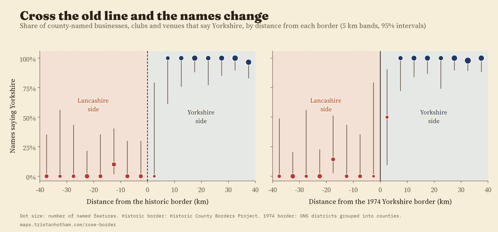
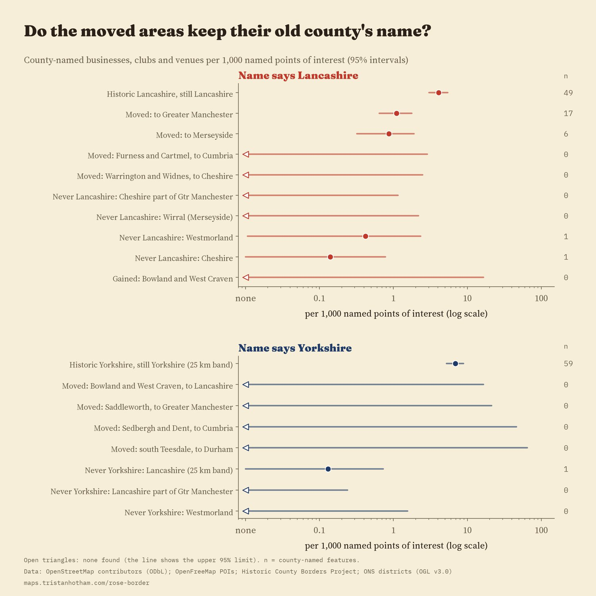
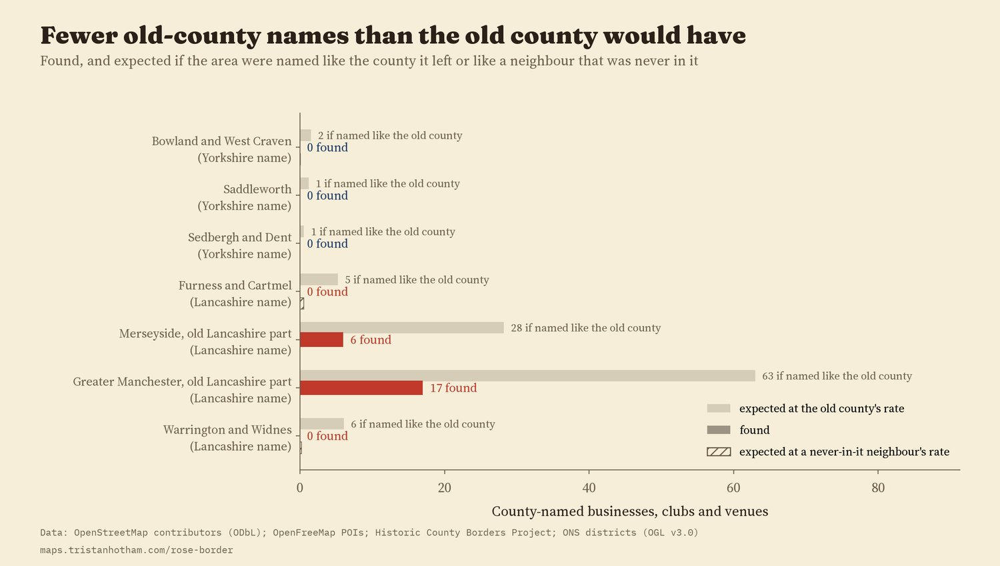
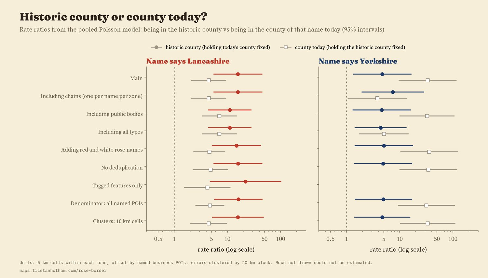
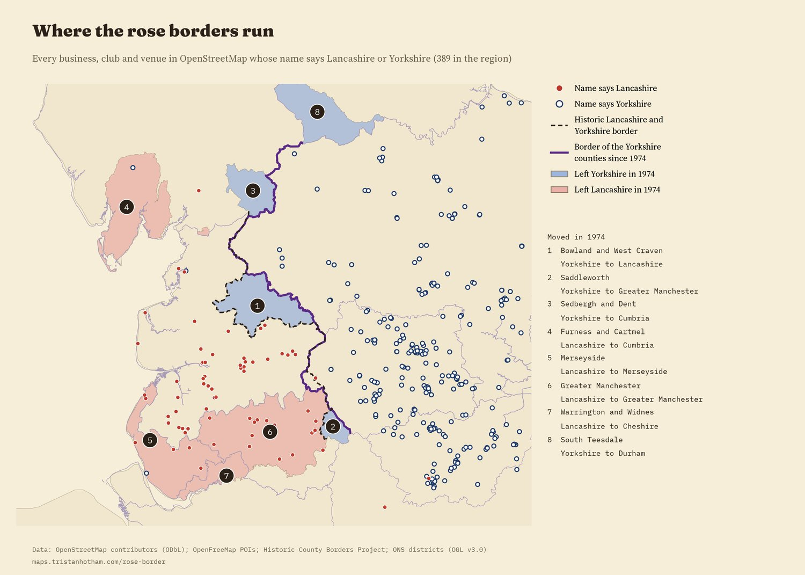

Every shop, club and venue in OpenStreetMap in and around Lancashire and Yorkshire whose name says Lancashire (red) or Yorkshire (white rose). Shaded: areas that changed county in 1974. Showing 0 county names. Tap a dot.
In 1974 the map of England was redrawn. Bowland, Barnoldswick and Earby went from Yorkshire into Lancashire. Saddleworth went into Greater Manchester, Sedbergh and Dent into Cumbria. Lancashire lost Furness and Cartmel to Cumbria, Warrington and Widnes to Cheshire, and Manchester and Liverpool to two new metropolitan counties. Half a century on, which county do local businesses, clubs and societies put in their names? I took every feature in OpenStreetMap whose name says Lancashire, Lancs, Yorkshire or Yorks, cleaned out the roads, bus stops, railways and branch names of big chains, and mapped the 389 businesses, clubs and venues left in and around the two counties against both the historic border and the new one. The main test I set in a plan written before looking, in the places that moved from Yorkshire to Lancashire, could not be answered: there are no county-named businesses there on the map. What the map does show is a sharp line where the old border did not move, and the Lancashire name thinning in Greater Manchester and Merseyside.
Where the old border between Lancashire and Yorkshire did not move, it still shows sharply in names. Within 25 km of the line on the Yorkshire side, 59 of 60 county-named businesses and clubs say Yorkshire. On the Lancashire side, 1 of 36 does. Within 10 km either side of the line the share saying Yorkshire jumps by 86 percentage points (95% interval 50 to 100). At false borders drawn 10 km into either county there is no comparable jump (-8 and 14 points, neither distinguishable from zero).

Share saying Yorkshire in 5 km bands from each border. Along most of its length the 1974 border follows the old one, so the two pictures are nearly the same.
The places that left Lancashire in 1974 are larger, and there the map says more (these comparisons were secondary in the plan). Inside today's Lancashire there are 4.1 Lancashire-named businesses and clubs for every 1,000 named shops, cafés, pubs and offices on the map. In the old Lancashire part of Greater Manchester the rate is 1.1 (17 names), about 27% of that (a rate ratio of 0.27, 95% interval 0.15 to 0.48). In the old Lancashire part of Merseyside it is 0.9 (6 names), about 21%. But the parts of the same two counties that were never in Lancashire, Stockport, Sale, Altrincham and Hyde, and the Wirral, have none at all, where 5 would be expected at the rate of their old Lancashire neighbours (an exploratory comparison I had not planned).
Further out, none were found. In Furness and Cartmel, now in Cumbria, there are no Lancashire-named businesses on the map, where about 5 would be expected at Lancashire's rate. In Warrington and Widnes, now in Cheshire, none either, where about 6 would be expected.

County-named businesses and clubs per 1,000 named points of interest, with 95% intervals.

Found, and expected at the rate of the county each area left.
This was the main test in my written plan, and it could not be carried out. The question was whether businesses in Barnoldswick, Earby and the Forest of Bowland call themselves Yorkshire or Lancashire. The map cannot say. Those areas, with Saddleworth, Sedbergh and Dent and south Teesdale, hold 534 named businesses and venues between them on OpenStreetMap, and not one is named after either county. At the rate of the Yorkshire side of the old line, about 4 Yorkshire names would be expected across all four, so finding none is not surprising. A building society branch in Barnoldswick carries the Yorkshire name, but it is a national chain whose name says where it began, not where the branch stands.
A model that puts every area on both maps at once, the historic county and the county today, gives a summary. For Lancashire names, places in historic Lancashire have a rate about 16 times higher (95% interval 6 to 45) even outside today's county, and places in today's Lancashire a further 4.5 times higher (2.1 to 9.3). Both stay above 1 in every check I ran. For Yorkshire the same model puts more weight on the county today, but that rests on a handful of areas with no county names at all, and it reverses when chain branches are included, so I do not lean on it.

The pooled model under every planned check.

Every county-named business, club and venue in the region. Numbers mark the areas moved in 1974.
Names. The names come from OpenStreetMap, queried for every UK feature whose name contains Lancashire, Lancs, Yorkshire, Yorks, Red Rose or White Rose. I dropped roads and bus stops, railway lines, routes, administrative areas, car parks, memorials, names taken from a street ("Yorkshire Street Dental"), products ("Yorkshire pudding") and one surname. I merged the same name mapped twice within 300 m, and set aside chain branches (the same name in three or more places, such as a building society) and public bodies (police, councils, NHS trusts, universities). I read every name within 40 km of the border, and in every moved area, by eye, and kept 75 hand decisions in a file.
Lines. The historic counties come from the Historic County Borders Project. The counties since 1974 are today's ceremonial counties, built from 2023 district boundaries; for this part of England they follow the 1974 lines, apart from Cleveland and Humberside, which existed from 1974 to 1996.
A fair comparison. A rural valley has fewer businesses than a city, so I count named shops, cafés, pubs, offices and other venues in the OpenFreeMap tiles (106,414 in the region) and express county names per 1,000 of them. I wrote the analysis plan down before computing any share or rate by area.
What this cannot say. OpenStreetMap is mapped by volunteers, so coverage varies. A name says nothing about when it was chosen, so names coined before 1974 cannot be told apart from later ones. Someone may name a firm after where they grew up, a product or a market. And Companies House, which holds registered company names, was not available to this study.